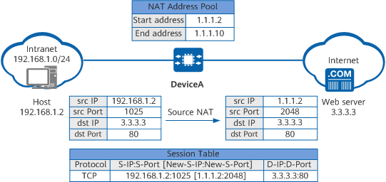

Implementation
NAPT applies to scenarios where a limited number of public addresses exist but many private users require access to the Internet. Figure 1 shows the NAT process.
Figure 1 NAPT process
When a host on the intranet accesses the web server on the Internet, the NAPT process on DeviceA is as follows:
- When receiving a packet from the host, DeviceA searches for a matching NAT policy and discovers that the packet requires NAT translation.
- DeviceA replaces the source IP address of the packet with a public IP address selected from the NAT address pool based on the hash result of the source IP address, replaces the source port number with a new one, creates a session entry accordingly, and forwards the packet to the web server on the Internet.
- The web server returns a response packet destined for the host. When receiving this packet, DeviceA searches the session table for the entry created in step 2, translates the destination address of the packet into the host's private IP address and the destination port number into the host's private port number based on this entry, and then forwards the packet to the host.
As both addresses and ports are translated, multiple private network users can use the same public address to access the Internet. The device distinguishes users based on ports, enabling more users to access the Internet simultaneously.